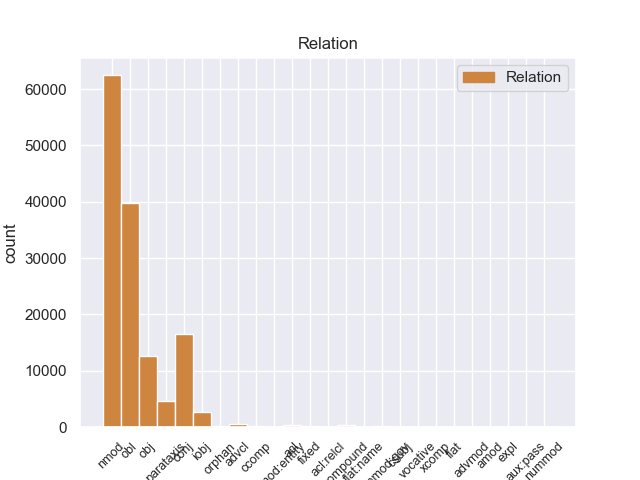
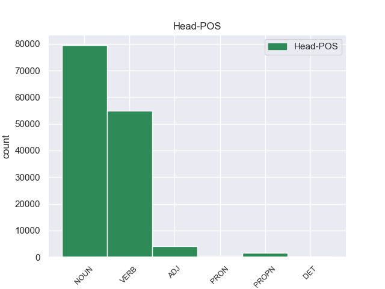
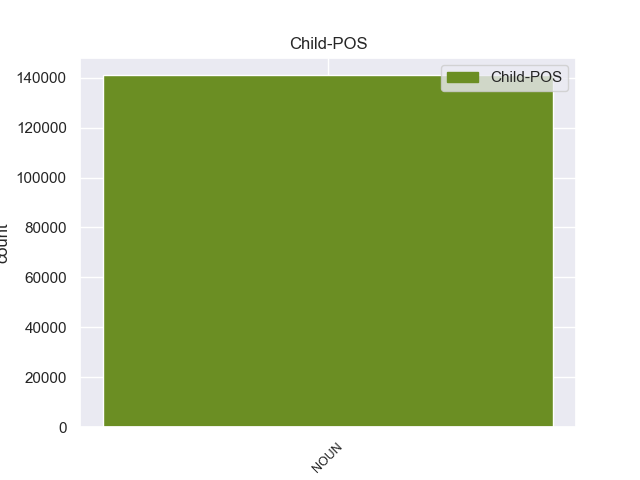

Distribution of features within this leaf



Agreement Rules sorted by frequency.
- When the dependent token is the nominal modifier(nmod) of the head token, and the dependent token is NOUN.
1 Затем _ _ _ _ 0 _ _ _
2 я _ _ _ _ 0 _ _ _
3 потащил _ _ _ _ 0 _ _ _
4 какое-то _ _ _ _ 0 _ _ _
5 длинное _ _ _ _ 0 _ _ _
6 растение _ _ _ _ 0 _ _ _
7 с _ _ _ _ 0 _ _ _
8 сухими _ _ _ _ 0 _ _ _
9 темными _ _ _ _ 0 _ _ _
10 коробочками коробочка NOUN _ Animacy=Inan|Case=Ins|Gender=Fem|Number=Plur 0 _ _ _
11 семенников семенник NOUN _ Animacy=Inan|Case=Gen|Gender=Masc|Number=Plur 10 nmod 10:nmod SpaceAfter=No
12 , _ _ _ _ 0 _ _ _
13 будто _ _ _ _ 0 _ _ _
14 наполненными _ _ _ _ 0 _ _ _
15 ватой _ _ _ _ 0 _ _ _
16 . _ _ _ _ 0 _ _ _
1 Но _ _ _ _ 0 _ _ _
2 кто-то _ _ _ _ 0 _ _ _
3 идет _ _ _ _ 0 _ _ _
4 мне _ _ _ _ 0 _ _ _
5 навстречу _ _ _ _ 0 _ _ _
6 и _ _ _ _ 0 _ _ _
7 , _ _ _ _ 0 _ _ _
8 может _ _ _ _ 0 _ _ _
9 быть _ _ _ _ 0 _ _ _
10 , _ _ _ _ 0 _ _ _
11 прошел пройти VERB _ Aspect=Perf|Gender=Masc|Mood=Ind|Number=Sing|Tense=Past|VerbForm=Fin|Voice=Act 0 _ _ _
12 уже _ _ _ _ 0 _ _ _
13 пол _ _ _ _ 0 _ _ _
14 пути путь NOUN _ Animacy=Inan|Case=Gen|Gender=Masc|Number=Sing 11 obl 11:obl SpaceAfter=No
15 … _ _ _ _ 0 _ _ _
1 Он _ _ _ _ 0 _ _ _
2 задумался _ _ _ _ 0 _ _ _
3 , _ _ _ _ 0 _ _ _
4 чуть _ _ _ _ 0 _ _ _
5 перекосив _ _ _ _ 0 _ _ _
6 худенькое _ _ _ _ 0 _ _ _
7 лицо _ _ _ _ 0 _ _ _
8 , _ _ _ _ 0 _ _ _
9 и _ _ _ _ 0 _ _ _
10 даже _ _ _ _ 0 _ _ _
11 перестал _ _ _ _ 0 _ _ _
12 выдергивать _ _ _ _ 0 _ _ _
13 цветы цветы NOUN _ Animacy=Inan|Case=Acc|Gender=Masc|Number=Plur 0 _ _ _
14 и _ _ _ _ 0 _ _ _
15 травинки травинка NOUN _ Animacy=Inan|Case=Acc|Gender=Fem|Number=Plur 13 conj 13:conj SpaceAfter=No
16 , _ _ _ _ 0 _ _ _
17 в _ _ _ _ 0 _ _ _
18 его _ _ _ _ 0 _ _ _
19 коричневых _ _ _ _ 0 _ _ _
20 глазах _ _ _ _ 0 _ _ _
21 появилась _ _ _ _ 0 _ _ _
22 боль _ _ _ _ 0 _ _ _
23 - _ _ _ _ 0 _ _ _
24 так _ _ _ _ 0 _ _ _
25 трудно _ _ _ _ 0 _ _ _
26 вложить _ _ _ _ 0 _ _ _
27 в _ _ _ _ 0 _ _ _
28 чужую _ _ _ _ 0 _ _ _
29 душу _ _ _ _ 0 _ _ _
30 самые _ _ _ _ 0 _ _ _
31 простые _ _ _ _ 0 _ _ _
32 и _ _ _ _ 0 _ _ _
33 очевидные _ _ _ _ 0 _ _ _
34 истины _ _ _ _ 0 _ _ _
35 ! _ _ _ _ 0 _ _ _
1 - _ _ _ _ 0 _ _ _
2 Ты _ _ _ _ 0 _ _ _
3 же _ _ _ _ 0 _ _ _
4 видишь _ _ _ _ 0 _ _ _
5 , _ _ _ _ 0 _ _ _
6 дорога _ _ _ _ 0 _ _ _
7 заросла _ _ _ _ 0 _ _ _
8 , _ _ _ _ 0 _ _ _
9 - _ _ _ _ 0 _ _ _
10 он _ _ _ _ 0 _ _ _
11 говорил _ _ _ _ 0 _ _ _
12 , _ _ _ _ 0 _ _ _
13 стоя _ _ _ _ 0 _ _ _
14 на _ _ _ _ 0 _ _ _
15 коленях _ _ _ _ 0 _ _ _
16 , _ _ _ _ 0 _ _ _
17 и _ _ _ _ 0 _ _ _
18 щепкой _ _ _ _ 0 _ _ _
19 выковыривал выковыривать VERB _ Aspect=Imp|Gender=Masc|Mood=Ind|Number=Sing|Tense=Past|VerbForm=Fin|Voice=Act 0 _ _ _
20 из _ _ _ _ 0 _ _ _
21 земли _ _ _ _ 0 _ _ _
22 какой-то _ _ _ _ 0 _ _ _
23 корень корень NOUN _ Animacy=Inan|Case=Acc|Gender=Masc|Number=Sing 19 obj 19:obj SpaceAfter=No
24 . _ _ _ _ 0 _ _ _
1 Видимо _ _ _ _ 0 _ _ _
2 , _ _ _ _ 0 _ _ _
3 это _ _ _ _ 0 _ _ _
4 он _ _ _ _ 0 _ _ _
5 и _ _ _ _ 0 _ _ _
6 называл называть VERB _ Aspect=Imp|Gender=Masc|Mood=Ind|Number=Sing|Tense=Past|VerbForm=Fin|Voice=Act 0 _ _ _
7 так _ _ _ _ 0 _ _ _
8 звучно _ _ _ _ 0 _ _ _
9 : _ _ _ _ 0 _ _ _
10 " _ _ _ _ 0 _ _ _
11 конъюнктивит конъюнктивит NOUN _ Animacy=Inan|Case=Nom|Gender=Masc|Number=Sing 6 parataxis 6:parataxis SpaceAfter=No
12 " _ _ _ _ 0 _ _ _
13 . _ _ _ _ 0 _ _ _
1 Низина _ _ _ _ 0 _ _ _
2 сменилась _ _ _ _ 0 _ _ _
3 возвышенностью _ _ _ _ 0 _ _ _
4 , _ _ _ _ 0 _ _ _
5 почва _ _ _ _ 0 _ _ _
6 под _ _ _ _ 0 _ _ _
7 ногами _ _ _ _ 0 _ _ _
8 окрепла _ _ _ _ 0 _ _ _
9 , _ _ _ _ 0 _ _ _
10 и _ _ _ _ 0 _ _ _
11 болотные _ _ _ _ 0 _ _ _
12 травы _ _ _ _ 0 _ _ _
13 уступили уступить VERB _ Aspect=Perf|Mood=Ind|Number=Plur|Tense=Past|VerbForm=Fin|Voice=Act 0 _ _ _
14 место _ _ _ _ 0 _ _ _
15 папоротникам папоротник NOUN _ Animacy=Inan|Case=Dat|Gender=Masc|Number=Plur 13 iobj 13:iobj _
16 и _ _ _ _ 0 _ _ _
17 хвощам _ _ _ _ 0 _ _ _
18 . _ _ _ _ 0 _ _ _
1 Моего _ _ _ _ 0 _ _ _
2 отца _ _ _ _ 0 _ _ _
3 он _ _ _ _ 0 _ _ _
4 приветствовал приветствовать VERB _ Aspect=Imp|Gender=Masc|Mood=Ind|Number=Sing|Tense=Past|VerbForm=Fin|Voice=Act 0 _ _ _
5 , _ _ _ _ 0 _ _ _
6 как _ _ _ _ 0 _ _ _
7 доброго _ _ _ _ 0 _ _ _
8 знакомого знакомый NOUN _ Animacy=Anim|Case=Acc|Gender=Masc|Number=Sing 4 advcl 4:advcl SpaceAfter=No
9 , _ _ _ _ 0 _ _ _
10 но _ _ _ _ 0 _ _ _
11 я _ _ _ _ 0 _ _ _
12 настолько _ _ _ _ 0 _ _ _
13 уж _ _ _ _ 0 _ _ _
14 привык _ _ _ _ 0 _ _ _
15 к _ _ _ _ 0 _ _ _
16 тому _ _ _ _ 0 _ _ _
17 , _ _ _ _ 0 _ _ _
18 что _ _ _ _ 0 _ _ _
19 отца _ _ _ _ 0 _ _ _
20 знают _ _ _ _ 0 _ _ _
21 все _ _ _ _ 0 _ _ _
22 в _ _ _ _ 0 _ _ _
23 этом _ _ _ _ 0 _ _ _
24 сказочном _ _ _ _ 0 _ _ _
25 городе _ _ _ _ 0 _ _ _
26 , _ _ _ _ 0 _ _ _
27 что _ _ _ _ 0 _ _ _
28 перестал _ _ _ _ 0 _ _ _
29 испытывать _ _ _ _ 0 _ _ _
30 гордость _ _ _ _ 0 _ _ _
31 от _ _ _ _ 0 _ _ _
32 подобных _ _ _ _ 0 _ _ _
33 знаков _ _ _ _ 0 _ _ _
34 внимания _ _ _ _ 0 _ _ _
35 . _ _ _ _ 0 _ _ _
1 Был _ _ _ _ 0 _ _ _
2 ли _ _ _ _ 0 _ _ _
3 в _ _ _ _ 0 _ _ _
4 яви _ _ _ _ 0 _ _ _
5 или _ _ _ _ 0 _ _ _
6 только _ _ _ _ 0 _ _ _
7 приснился _ _ _ _ 0 _ _ _
8 мне _ _ _ _ 0 _ _ _
9 этот _ _ _ _ 0 _ _ _
10 странный _ _ _ _ 0 _ _ _
11 мальчик мальчик NOUN _ Animacy=Anim|Case=Nom|Gender=Masc|Number=Sing 0 _ _ _
12 , _ _ _ _ 0 _ _ _
13 овеянный _ _ _ _ 0 _ _ _
14 нежностью _ _ _ _ 0 _ _ _
15 и _ _ _ _ 0 _ _ _
16 печалью _ _ _ _ 0 _ _ _
17 нездешности _ _ _ _ 0 _ _ _
18 , _ _ _ _ 0 _ _ _
19 как _ _ _ _ 0 _ _ _
20 Маленький _ _ _ _ 0 _ _ _
21 принц принц NOUN _ Animacy=Anim|Case=Nom|Gender=Masc|Number=Sing 11 acl 11:acl _
22 Антуана _ _ _ _ 0 _ _ _
23 де _ _ _ _ 0 _ _ _
24 Сент-Экзюпери _ _ _ _ 0 _ _ _
25 . _ _ _ _ 0 _ _ _
1 Возле _ _ _ _ 0 _ _ _
2 поселка _ _ _ _ 0 _ _ _
3 находился _ _ _ _ 0 _ _ _
4 санаторий _ _ _ _ 0 _ _ _
5 , _ _ _ _ 0 _ _ _
6 там _ _ _ _ 0 _ _ _
7 шло _ _ _ _ 0 _ _ _
8 строительство _ _ _ _ 0 _ _ _
9 и _ _ _ _ 0 _ _ _
10 была _ _ _ _ 0 _ _ _
11 нужда _ _ _ _ 0 _ _ _
12 в _ _ _ _ 0 _ _ _
13 главном _ _ _ _ 0 _ _ _
14 инженере _ _ _ _ 0 _ _ _
15 ; _ _ _ _ 0 _ _ _
16 под _ _ _ _ 0 _ _ _
17 боком _ _ _ _ 0 _ _ _
18 располагалась _ _ _ _ 0 _ _ _
19 отличная _ _ _ _ 0 _ _ _
20 школа школа NOUN _ Animacy=Inan|Case=Nom|Gender=Fem|Number=Sing 0 _ _ _
21 - _ _ _ _ 0 _ _ _
22 десятилетка десятилетка NOUN _ Animacy=Inan|Case=Nom|Gender=Fem|Number=Sing 20 compound 20:compound SpaceAfter=No
23 , _ _ _ _ 0 _ _ _
24 где _ _ _ _ 0 _ _ _
25 как _ _ _ _ 0 _ _ _
26 раз _ _ _ _ 0 _ _ _
27 нужен _ _ _ _ 0 _ _ _
28 был _ _ _ _ 0 _ _ _
29 преподаватель _ _ _ _ 0 _ _ _
30 английского _ _ _ _ 0 _ _ _
31 языка _ _ _ _ 0 _ _ _
32 , _ _ _ _ 0 _ _ _
33 а _ _ _ _ 0 _ _ _
34 жена _ _ _ _ 0 _ _ _
35 Павлова _ _ _ _ 0 _ _ _
36 занималась _ _ _ _ 0 _ _ _
37 техническими _ _ _ _ 0 _ _ _
38 переводами _ _ _ _ 0 _ _ _
39 с _ _ _ _ 0 _ _ _
40 английского _ _ _ _ 0 _ _ _
41 . _ _ _ _ 0 _ _ _
1 Весь _ _ _ _ 0 _ _ _
2 лес _ _ _ _ 0 _ _ _
3 был _ _ _ _ 0 _ _ _
4 населен _ _ _ _ 0 _ _ _
5 голосами _ _ _ _ 0 _ _ _
6 прошлого _ _ _ _ 0 _ _ _
7 , _ _ _ _ 0 _ _ _
8 и _ _ _ _ 0 _ _ _
9 я _ _ _ _ 0 _ _ _
10 впервые _ _ _ _ 0 _ _ _
11 с _ _ _ _ 0 _ _ _
12 ошеломляющей _ _ _ _ 0 _ _ _
13 силой _ _ _ _ 0 _ _ _
14 ощутил _ _ _ _ 0 _ _ _
15 , _ _ _ _ 0 _ _ _
16 как _ _ _ _ 0 _ _ _
17 много _ _ _ _ 0 _ _ _
18 пробыл _ _ _ _ 0 _ _ _
19 на _ _ _ _ 0 _ _ _
20 этом _ _ _ _ 0 _ _ _
21 свете _ _ _ _ 0 _ _ _
22 и _ _ _ _ 0 _ _ _
23 что _ _ _ _ 0 _ _ _
24 прожитое _ _ _ _ 0 _ _ _
25 - _ _ _ _ 0 _ _ _
26 это _ _ _ _ 0 _ _ _
27 не _ _ _ _ 0 _ _ _
28 разбег _ _ _ _ 0 _ _ _
29 для _ _ _ _ 0 _ _ _
30 взлета _ _ _ _ 0 _ _ _
31 в _ _ _ _ 0 _ _ _
32 какую-то _ _ _ _ 0 _ _ _
33 будущую _ _ _ _ 0 _ _ _
34 , _ _ _ _ 0 _ _ _
35 настоящую _ _ _ _ 0 _ _ _
36 жизнь _ _ _ _ 0 _ _ _
37 , _ _ _ _ 0 _ _ _
38 что _ _ _ _ 0 _ _ _
39 это _ _ _ _ 0 _ _ _
40 уже _ _ _ _ 0 _ _ _
41 жизнь _ _ _ _ 0 _ _ _
42 , _ _ _ _ 0 _ _ _
43 в _ _ _ _ 0 _ _ _
44 которой _ _ _ _ 0 _ _ _
45 все _ _ _ _ 0 _ _ _
46 связано _ _ _ _ 0 _ _ _
47 : _ _ _ _ 0 _ _ _
48 далекое _ _ _ _ 0 _ _ _
When the dependent token is the clausal complement(ccomp) of the head token, and the dependent token is NOUN.
1 Я _ _ _ _ 0 _ _ _
2 сказал сказать VERB _ Aspect=Perf|Gender=Masc|Mood=Ind|Number=Sing|Tense=Past|VerbForm=Fin|Voice=Act 0 _ _ _
3 бы _ _ _ _ 0 _ _ _
4 им _ _ _ _ 0 _ _ _
5 , _ _ _ _ 0 _ _ _
6 что _ _ _ _ 0 _ _ _
7 это _ _ _ _ 0 _ _ _
8 папина _ _ _ _ 0 _ _ _
9 знакомая знакомая NOUN _ Animacy=Anim|Case=Nom|Gender=Fem|Number=Sing 2 ccomp 2:ccomp _
10 и _ _ _ _ 0 _ _ _
11 моя _ _ _ _ 0 _ _ _
12 знакомая _ _ _ _ 0 _ _ _
13 тоже _ _ _ _ 0 _ _ _
14 ; _ _ _ _ 0 _ _ _
15 что _ _ _ _ 0 _ _ _
16 у _ _ _ _ 0 _ _ _
17 нее _ _ _ _ 0 _ _ _
18 негромкий _ _ _ _ 0 _ _ _
19 голос _ _ _ _ 0 _ _ _
20 и _ _ _ _ 0 _ _ _
21 тихий _ _ _ _ 0 _ _ _
22 , _ _ _ _ 0 _ _ _
23 долгий _ _ _ _ 0 _ _ _
24 смех _ _ _ _ 0 _ _ _
25 ; _ _ _ _ 0 _ _ _
26 что _ _ _ _ 0 _ _ _
27 у _ _ _ _ 0 _ _ _
28 нее _ _ _ _ 0 _ _ _
29 теплые _ _ _ _ 0 _ _ _
30 длинные _ _ _ _ 0 _ _ _
31 пальцы _ _ _ _ 0 _ _ _
32 и _ _ _ _ 0 _ _ _
33 когда _ _ _ _ 0 _ _ _
34 она _ _ _ _ 0 _ _ _
35 осторожно _ _ _ _ 0 _ _ _
36 запускает _ _ _ _ 0 _ _ _
37 их _ _ _ _ 0 _ _ _
38 в _ _ _ _ 0 _ _ _
39 волосы _ _ _ _ 0 _ _ _
40 человеку _ _ _ _ 0 _ _ _
41 , _ _ _ _ 0 _ _ _
42 то _ _ _ _ 0 _ _ _
43 человеку _ _ _ _ 0 _ _ _
44 хочется _ _ _ _ 0 _ _ _
45 и _ _ _ _ 0 _ _ _
46 плакать _ _ _ _ 0 _ _ _
47 , _ _ _ _ 0 _ _ _
48 и _ _ _ _ 0 _ _ _
49 смеяться _ _ _ _ 0 _ _ _
50 одновременно _ _ _ _ 0 _ _ _
51 . _ _ _ _ 0 _ _ _
When the dependent token is the fixed multiword expression(fixed) of the head token, and the dependent token is NOUN.
1 Они _ _ _ _ 0 _ _ _
2 говорили _ _ _ _ 0 _ _ _
3 единственно _ _ _ _ 0 _ _ _
4 друг друг NOUN _ Animacy=Anim|Case=Nom|Gender=Masc|Number=Sing 0 _ _ _
5 для _ _ _ _ 0 _ _ _
6 друга друг NOUN _ Animacy=Anim|Case=Gen|Gender=Masc|Number=Sing 4 fixed 4:fixed SpaceAfter=No
7 , _ _ _ _ 0 _ _ _
8 просто _ _ _ _ 0 _ _ _
9 и _ _ _ _ 0 _ _ _
10 серьезно _ _ _ _ 0 _ _ _
11 , _ _ _ _ 0 _ _ _
12 и _ _ _ _ 0 _ _ _
13 Павлова _ _ _ _ 0 _ _ _
14 удручала _ _ _ _ 0 _ _ _
15 серьезность _ _ _ _ 0 _ _ _
16 этого _ _ _ _ 0 _ _ _
17 взаимного _ _ _ _ 0 _ _ _
18 розыгрыша _ _ _ _ 0 _ _ _
19 с _ _ _ _ 0 _ _ _
20 открытыми _ _ _ _ 0 _ _ _
21 картами _ _ _ _ 0 _ _ _
22 . _ _ _ _ 0 _ _ _
When the dependent token is the relative clause modifier(acl:relcl) of the head token, and the dependent token is NOUN.
1 И _ _ _ _ 0 _ _ _
2 здесь _ _ _ _ 0 _ _ _
3 незримый _ _ _ _ 0 _ _ _
4 стеклянный _ _ _ _ 0 _ _ _
5 купол _ _ _ _ 0 _ _ _
6 отделял _ _ _ _ 0 _ _ _
7 их _ _ _ _ 0 _ _ _
8 от _ _ _ _ 0 _ _ _
9 зрителей _ _ _ _ 0 _ _ _
10 , _ _ _ _ 0 _ _ _
11 от _ _ _ _ 0 _ _ _
12 всего все PRON _ Animacy=Inan|Case=Gen|Gender=Neut|Number=Sing 0 _ _ _
13 , _ _ _ _ 0 _ _ _
14 что _ _ _ _ 0 _ _ _
15 не _ _ _ _ 0 _ _ _
16 было _ _ _ _ 0 _ _ _
17 их _ _ _ _ 0 _ _ _
18 миром мир NOUN _ Animacy=Inan|Case=Ins|Gender=Masc|Number=Sing 12 acl:relcl 12:acl:relcl SpaceAfter=No
19 . _ _ _ _ 0 _ _ _
When the dependent token is the numeric modifer governing case of noun(nummod:gov) of the head token, and the dependent token is NOUN.
1 Так _ _ _ _ 0 _ _ _
2 , _ _ _ _ 0 _ _ _
3 впервые _ _ _ _ 0 _ _ _
4 за _ _ _ _ 0 _ _ _
5 многие _ _ _ _ 0 _ _ _
6 годы _ _ _ _ 0 _ _ _
7 число _ _ _ _ 0 _ _ _
8 новорожденных _ _ _ _ 0 _ _ _
9 в _ _ _ _ 0 _ _ _
10 нашей _ _ _ _ 0 _ _ _
11 стране _ _ _ _ 0 _ _ _
12 ( _ _ _ _ 0 _ _ _
13 за _ _ _ _ 0 _ _ _
14 год _ _ _ _ 0 _ _ _
15 ) _ _ _ _ 0 _ _ _
16 достигло _ _ _ _ 0 _ _ _
17 в _ _ _ _ 0 _ _ _
18 1983 _ _ _ _ 0 _ _ _
19 году _ _ _ _ 0 _ _ _
20 5,4 _ _ _ _ 0 _ _ _
21 млн _ _ _ _ 0 _ _ _
22 . _ _ _ _ 0 _ _ _
23 , _ _ _ _ 0 _ _ _
24 а _ _ _ _ 0 _ _ _
25 в _ _ _ _ 0 _ _ _
26 1986 _ _ _ _ 0 _ _ _
27 повысилось повыситься VERB _ Aspect=Perf|Gender=Neut|Mood=Ind|Number=Sing|Tense=Past|VerbForm=Fin|Voice=Mid 0 _ _ _
28 до _ _ _ _ 0 _ _ _
29 5,5 _ _ _ _ 0 _ _ _
30 млн миллион NOUN _ Animacy=Inan|Case=Gen|Gender=Masc|Number=Sing 27 nummod:gov 27:nummod:gov SpaceAfter=No
31 . _ _ _ _ 0 _ _ _
When the dependent token is the numeric modifer(nummod:entity) of the head token, and the dependent token is NOUN.
1 Благодаря _ _ _ _ 0 _ _ _
2 бдительности _ _ _ _ 0 _ _ _
3 локомотивной _ _ _ _ 0 _ _ _
4 бригады _ _ _ _ 0 _ _ _
5 скорого _ _ _ _ 0 _ _ _
6 поезда поезд NOUN _ Animacy=Inan|Case=Gen|Gender=Masc|Number=Sing 0 _ _ _
7 номер номер NOUN _ Animacy=Inan|Case=Nom|Gender=Masc|Number=Sing 6 nummod:entity 6:nummod:entity _
8 49 _ _ _ _ 0 _ _ _
9 " _ _ _ _ 0 _ _ _
10 Кисловодск _ _ _ _ 0 _ _ _
11 - _ _ _ _ 0 _ _ _
12 Санкт-Петербург _ _ _ _ 0 _ _ _
13 " _ _ _ _ 0 _ _ _
14 на _ _ _ _ 0 _ _ _
15 Воронежском _ _ _ _ 0 _ _ _
16 отделении _ _ _ _ 0 _ _ _
17 Юго-Восточной _ _ _ _ 0 _ _ _
18 железной _ _ _ _ 0 _ _ _
19 дороги _ _ _ _ 0 _ _ _
20 предотвращена _ _ _ _ 0 _ _ _
21 крупная _ _ _ _ 0 _ _ _
22 авария _ _ _ _ 0 _ _ _
23 . _ _ _ _ 0 _ _ _
When the dependent token is the clausal subject(csubj) of the head token, and the dependent token is NOUN.
1 - _ _ _ _ 0 _ _ _
2 Мне я PRON _ Case=Dat|Number=Sing|Person=1 0 _ _ _
2.1 _ _ _ _ _ 0 _ _ _
2.2 _ _ _ _ _ 0 _ _ _
When the dependent token is the flat-name(flat:name) of the head token, and the dependent token is NOUN.
1 Работа работа NOUN _ Animacy=Inan|Case=Nom|Gender=Fem|Number=Sing 0 _ _ _
2 работой работа NOUN _ Animacy=Inan|Case=Ins|Gender=Fem|Number=Sing 1 flat:name 1:flat:name SpaceAfter=No
3 , _ _ _ _ 0 _ _ _
4 а _ _ _ _ 0 _ _ _
5 у _ _ _ _ 0 _ _ _
6 человека _ _ _ _ 0 _ _ _
7 должен _ _ _ _ 0 _ _ _
8 быть _ _ _ _ 0 _ _ _
9 дом _ _ _ _ 0 _ _ _
10 , _ _ _ _ 0 _ _ _
11 куда _ _ _ _ 0 _ _ _
12 он _ _ _ _ 0 _ _ _
13 возвращается _ _ _ _ 0 _ _ _
14 , _ _ _ _ 0 _ _ _
15 снимает _ _ _ _ 0 _ _ _
16 рабочее _ _ _ _ 0 _ _ _
17 платье _ _ _ _ 0 _ _ _
18 , _ _ _ _ 0 _ _ _
19 надевает _ _ _ _ 0 _ _ _
20 халат _ _ _ _ 0 _ _ _
21 , _ _ _ _ 0 _ _ _
22 живет _ _ _ _ 0 _ _ _
23 . _ _ _ _ 0 _ _ _
When the dependent token is the flat multiword expression(flat) of the head token, and the dependent token is NOUN.
1 Как _ _ _ _ 0 _ _ _
2 сообщили _ _ _ _ 0 _ _ _
3 в _ _ _ _ 0 _ _ _
4 штабе _ _ _ _ 0 _ _ _
5 Оперативной _ _ _ _ 0 _ _ _
6 группы _ _ _ _ 0 _ _ _
7 российских _ _ _ _ 0 _ _ _
8 войск _ _ _ _ 0 _ _ _
9 в _ _ _ _ 0 _ _ _
10 Приднестровье _ _ _ _ 0 _ _ _
11 , _ _ _ _ 0 _ _ _
12 в _ _ _ _ 0 _ _ _
13 24 _ _ _ _ 0 _ _ _
14 вагонах _ _ _ _ 0 _ _ _
15 вывозятся _ _ _ _ 0 _ _ _
16 ракетные _ _ _ _ 0 _ _ _
17 установки _ _ _ _ 0 _ _ _
18 класса _ _ _ _ 0 _ _ _
19 " _ _ _ _ 0 _ _ _
20 земля земля NOUN _ Animacy=Inan|Case=Nom|Gender=Fem|Number=Sing 0 _ _ _
21 - _ _ _ _ 0 _ _ _
22 земля земля NOUN _ Animacy=Inan|Case=Nom|Gender=Fem|Number=Sing 20 flat 20:flat SpaceAfter=No
23 " _ _ _ _ 0 _ _ _
24 Ураган _ _ _ _ 0 _ _ _
25 , _ _ _ _ 0 _ _ _
26 а _ _ _ _ 0 _ _ _
27 также _ _ _ _ 0 _ _ _
28 большое _ _ _ _ 0 _ _ _
29 количество _ _ _ _ 0 _ _ _
30 152-миллиметровых _ _ _ _ 0 _ _ _
31 снарядов _ _ _ _ 0 _ _ _
32 . _ _ _ _ 0 _ _ _
When the dependent token is the open clausal complement(xcomp) of the head token, and the dependent token is NOUN.
1 Нюрка _ _ _ _ 0 _ _ _
2 на _ _ _ _ 0 _ _ _
When the dependent token is the vocative(vocative) of the head token, and the dependent token is NOUN.
1 Серег серега NOUN _ Animacy=Anim|Case=Voc|Gender=Masc|Number=Sing 3 vocative 3:vocative SpaceAfter=No
2 , _ _ _ _ 0 _ _ _
3 давай давать VERB _ Aspect=Imp|Mood=Imp|Number=Sing|Person=2|VerbForm=Fin|Voice=Act 0 _ _ _
4 ! _ _ _ _ 0 _ _ _
When the dependent token is the adjectival modifier(amod) of the head token, and the dependent token is NOUN.
1 Иркутск _ _ _ _ 0 _ _ _
2 был _ _ _ _ 0 _ _ _
3 чудом чудо NOUN _ Animacy=Inan|Case=Ins|Gender=Neut|Number=Sing 0 _ _ _
4 , _ _ _ _ 0 _ _ _
5 вернее _ _ _ _ 0 _ _ _
6 , _ _ _ _ 0 _ _ _
7 целым _ _ _ _ 0 _ _ _
8 скопищем скопище NOUN _ Animacy=Inan|Case=Ins|Gender=Neut|Number=Sing 3 amod 3:amod _
9 чудес _ _ _ _ 0 _ _ _
10 . _ _ _ _ 0 _ _ _
When the dependent token is the expletive(expl) of the head token, and the dependent token is NOUN.
1 Самый _ _ _ _ 0 _ _ _
2 простейший _ _ _ _ 0 _ _ _
3 случай случай NOUN _ Animacy=Inan|Case=Nom|Gender=Masc|Number=Sing 8 expl 8:expl _
4 - _ _ _ _ 0 _ _ _
5 это _ _ _ _ 0 _ _ _
6 просто _ _ _ _ 0 _ _ _
7 отражение _ _ _ _ 0 _ _ _
8 получается получаться VERB _ Aspect=Imp|Mood=Ind|Number=Sing|Person=3|Tense=Pres|VerbForm=Fin|Voice=Mid 0 _ _ _
9 от _ _ _ _ 0 _ _ _
10 кристаллических _ _ _ _ 0 _ _ _
11 плоскостей _ _ _ _ 0 _ _ _
12 . _ _ _ _ 0 _ _ _
When the dependent token is the passive auxiliary(aux:pass) of the head token, and the dependent token is NOUN.
1 Как _ _ _ _ 0 _ _ _
2 сообщает _ _ _ _ 0 _ _ _
3 корреспондент _ _ _ _ 0 _ _ _
4 Страны.Ru _ _ _ _ 0 _ _ _
5 . _ _ _ _ 0 _ _ _
6 командующий _ _ _ _ 0 _ _ _
7 подчеркнул _ _ _ _ 0 _ _ _
8 , _ _ _ _ 0 _ _ _
9 что _ _ _ _ 0 _ _ _
10 " _ _ _ _ 0 _ _ _
11 впервые _ _ _ _ 0 _ _ _
12 за _ _ _ _ 0 _ _ _
13 пять _ _ _ _ 0 _ _ _
14 лет _ _ _ _ 0 _ _ _
15 на _ _ _ _ 0 _ _ _
16 сто _ _ _ _ 0 _ _ _
17 процентов _ _ _ _ 0 _ _ _
18 выполнен _ _ _ _ 0 _ _ _
19 график график NOUN _ Animacy=Inan|Case=Nom|Gender=Masc|Number=Sing 24 aux:pass 24:aux:pass _
20 запусков _ _ _ _ 0 _ _ _
21 космических _ _ _ _ 0 _ _ _
22 аппаратов _ _ _ _ 0 _ _ _
23 , _ _ _ _ 0 _ _ _
24 утвержденный утвердить VERB _ Aspect=Perf|Case=Nom|Gender=Masc|Number=Sing|Tense=Past|VerbForm=Part|Voice=Pass 0 _ _ _
25 начальником _ _ _ _ 0 _ _ _
26 Генерального _ _ _ _ 0 _ _ _
27 штаба _ _ _ _ 0 _ _ _
28 Вооруженных _ _ _ _ 0 _ _ _
29 Сил _ _ _ _ 0 _ _ _
30 РФ _ _ _ _ 0 _ _ _
31 генералом _ _ _ _ 0 _ _ _
32 армии _ _ _ _ 0 _ _ _
33 Анатолием _ _ _ _ 0 _ _ _
34 Квашниным _ _ _ _ 0 _ _ _
35 , _ _ _ _ 0 _ _ _
36 в _ _ _ _ 0 _ _ _
37 первую _ _ _ _ 0 _ _ _
38 очередь _ _ _ _ 0 _ _ _
39 для _ _ _ _ 0 _ _ _
40 обеспечения _ _ _ _ 0 _ _ _
41 безопасности _ _ _ _ 0 _ _ _
42 страны _ _ _ _ 0 _ _ _
43 " _ _ _ _ 0 _ _ _
44 . _ _ _ _ 0 _ _ _
When the dependent token is the numeric modifier(nummod) of the head token, and the dependent token is NOUN.
1 Ежегодно _ _ _ _ 0 _ _ _
2 он _ _ _ _ 0 _ _ _
3 спасает _ _ _ _ 0 _ _ _
4 миллионы _ _ _ _ 0 _ _ _
5 жизней _ _ _ _ 0 _ _ _
6 , _ _ _ _ 0 _ _ _
7 предотвращая _ _ _ _ 0 _ _ _
8 сотни сотня NOUN _ Animacy=Inan|Case=Acc|Gender=Fem|Number=Plur 9 nummod 9:nummod _
9 тысяч тысяча NOUN _ Animacy=Inan|Case=Gen|Gender=Fem|Number=Plur 0 _ _ _
10 инфарктов _ _ _ _ 0 _ _ _
11 . _ _ _ _ 0 _ _ _
When the dependent token is the adverbial modifier(advmod) of the head token, and the dependent token is NOUN.
1 Укрощение укрощение NOUN _ Animacy=Inan|Case=Acc|Gender=Neut|Number=Sing 5 advmod 5:advmod _
2 укротителей _ _ _ _ 0 _ _ _
3 - _ _ _ _ 0 _ _ _
4 так _ _ _ _ 0 _ _ _
5 называется называться VERB _ Aspect=Imp|Mood=Ind|Number=Sing|Person=3|Tense=Pres|VerbForm=Fin|Voice=Mid 0 _ _ _
6 представление _ _ _ _ 0 _ _ _
7 по _ _ _ _ 0 _ _ _
8 мотивам _ _ _ _ 0 _ _ _
9 пьесы _ _ _ _ 0 _ _ _
10 английского _ _ _ _ 0 _ _ _
11 драматурга _ _ _ _ 0 _ _ _
12 Джона _ _ _ _ 0 _ _ _
13 Флетчера _ _ _ _ 0 _ _ _
14 , _ _ _ _ 0 _ _ _
15 премьера _ _ _ _ 0 _ _ _
16 которого _ _ _ _ 0 _ _ _
17 состоится _ _ _ _ 0 _ _ _
18 14 _ _ _ _ 0 _ _ _
19 января _ _ _ _ 0 _ _ _
20 в _ _ _ _ 0 _ _ _
21 популярном _ _ _ _ 0 _ _ _
22 московском _ _ _ _ 0 _ _ _
23 театре _ _ _ _ 0 _ _ _
24 " _ _ _ _ 0 _ _ _
25 Ленком _ _ _ _ 0 _ _ _
26 " _ _ _ _ 0 _ _ _
27 , _ _ _ _ 0 _ _ _
28 передает _ _ _ _ 0 _ _ _
29 корреспондент _ _ _ _ 0 _ _ _
30 " _ _ _ _ 0 _ _ _
31 РИА _ _ _ _ 0 _ _ _
32 Новости _ _ _ _ 0 _ _ _
33 " _ _ _ _ 0 _ _ _
34 . _ _ _ _ 0 _ _ _
Disagree Examples:
1 Начальник _ _ _ _ 0 _ _ _
2 областного _ _ _ _ 0 _ _ _
3 управления _ _ _ _ 0 _ _ _
4 связи _ _ _ _ 0 _ _ _
5 Семен _ _ _ _ 0 _ _ _
6 Еремеевич _ _ _ _ 0 _ _ _
7 был _ _ _ _ 0 _ _ _
8 человек _ _ _ _ 0 _ _ _
9 простой _ _ _ _ 0 _ _ _
10 , _ _ _ _ 0 _ _ _
11 приходил _ _ _ _ 0 _ _ _
12 на _ _ _ _ 0 _ _ _
13 работу _ _ _ _ 0 _ _ _
14 всегда _ _ _ _ 0 _ _ _
15 вовремя _ _ _ _ 0 _ _ _
16 , _ _ _ _ 0 _ _ _
17 здоровался _ _ _ _ 0 _ _ _
18 с _ _ _ _ 0 _ _ _
19 секретаршей _ _ _ _ 0 _ _ _
20 за _ _ _ _ 0 _ _ _
21 руку _ _ _ _ 0 _ _ _
22 и _ _ _ _ 0 _ _ _
23 иногда _ _ _ _ 0 _ _ _
24 даже _ _ _ _ 0 _ _ _
25 писал писать VERB _ Aspect=Imp|Gender=Masc|Mood=Ind|Number=Sing|Tense=Past|VerbForm=Fin|Voice=Act 0 _ _ _
26 в _ _ _ _ 0 _ _ _
27 стенгазету _ _ _ _ 0 _ _ _
28 заметки заметка NOUN _ Animacy=Inan|Case=Acc|Gender=Fem|Number=Plur 25 obj 25:obj _
29 под _ _ _ _ 0 _ _ _
30 псевдонимом _ _ _ _ 0 _ _ _
31 " _ _ _ _ 0 _ _ _
32 Муха _ _ _ _ 0 _ _ _
33 " _ _ _ _ 0 _ _ _
34 . _ _ _ _ 0 _ _ _
1 В _ _ _ _ 0 _ _ _
2 приемной приемная NOUN _ Animacy=Inan|Case=Loc|Gender=Fem|Number=Sing 6 obl 6:obl _
3 его _ _ _ _ 0 _ _ _
4 с _ _ _ _ 0 _ _ _
5 утра _ _ _ _ 0 _ _ _
6 ожидали ожидать VERB _ Aspect=Imp|Mood=Ind|Number=Plur|Tense=Past|VerbForm=Fin|Voice=Act 0 _ _ _
7 посетители _ _ _ _ 0 _ _ _
8 , _ _ _ _ 0 _ _ _
9 - _ _ _ _ 0 _ _ _
10 кое-кто _ _ _ _ 0 _ _ _
11 с _ _ _ _ 0 _ _ _
12 важными _ _ _ _ 0 _ _ _
13 делами _ _ _ _ 0 _ _ _
14 , _ _ _ _ 0 _ _ _
15 а _ _ _ _ 0 _ _ _
16 кое-кто _ _ _ _ 0 _ _ _
17 и _ _ _ _ 0 _ _ _
18 с _ _ _ _ 0 _ _ _
19 такими _ _ _ _ 0 _ _ _
20 , _ _ _ _ 0 _ _ _
21 которые _ _ _ _ 0 _ _ _
22 легко _ _ _ _ 0 _ _ _
23 можно _ _ _ _ 0 _ _ _
24 было _ _ _ _ 0 _ _ _
25 решить _ _ _ _ 0 _ _ _
26 в _ _ _ _ 0 _ _ _
27 нижестоящих _ _ _ _ 0 _ _ _
28 инстанциях _ _ _ _ 0 _ _ _
29 , _ _ _ _ 0 _ _ _
30 не _ _ _ _ 0 _ _ _
31 затрудняя _ _ _ _ 0 _ _ _
32 Семена _ _ _ _ 0 _ _ _
33 Еремеевича _ _ _ _ 0 _ _ _
34 . _ _ _ _ 0 _ _ _
1 В _ _ _ _ 0 _ _ _
2 приемной _ _ _ _ 0 _ _ _
3 его _ _ _ _ 0 _ _ _
4 с _ _ _ _ 0 _ _ _
5 утра утро NOUN _ Animacy=Inan|Case=Gen|Gender=Neut|Number=Sing 6 obl 6:obl _
6 ожидали ожидать VERB _ Aspect=Imp|Mood=Ind|Number=Plur|Tense=Past|VerbForm=Fin|Voice=Act 0 _ _ _
7 посетители _ _ _ _ 0 _ _ _
8 , _ _ _ _ 0 _ _ _
9 - _ _ _ _ 0 _ _ _
10 кое-кто _ _ _ _ 0 _ _ _
11 с _ _ _ _ 0 _ _ _
12 важными _ _ _ _ 0 _ _ _
13 делами _ _ _ _ 0 _ _ _
14 , _ _ _ _ 0 _ _ _
15 а _ _ _ _ 0 _ _ _
16 кое-кто _ _ _ _ 0 _ _ _
17 и _ _ _ _ 0 _ _ _
18 с _ _ _ _ 0 _ _ _
19 такими _ _ _ _ 0 _ _ _
20 , _ _ _ _ 0 _ _ _
21 которые _ _ _ _ 0 _ _ _
22 легко _ _ _ _ 0 _ _ _
23 можно _ _ _ _ 0 _ _ _
24 было _ _ _ _ 0 _ _ _
25 решить _ _ _ _ 0 _ _ _
26 в _ _ _ _ 0 _ _ _
27 нижестоящих _ _ _ _ 0 _ _ _
28 инстанциях _ _ _ _ 0 _ _ _
29 , _ _ _ _ 0 _ _ _
30 не _ _ _ _ 0 _ _ _
31 затрудняя _ _ _ _ 0 _ _ _
32 Семена _ _ _ _ 0 _ _ _
33 Еремеевича _ _ _ _ 0 _ _ _
34 . _ _ _ _ 0 _ _ _
1 В _ _ _ _ 0 _ _ _
2 глубине _ _ _ _ 0 _ _ _
3 стоял _ _ _ _ 0 _ _ _
4 широкий _ _ _ _ 0 _ _ _
5 письменный _ _ _ _ 0 _ _ _
6 стол стол NOUN _ Animacy=Inan|Case=Nom|Gender=Masc|Number=Sing 0 _ _ _
7 с _ _ _ _ 0 _ _ _
8 бронзовыми _ _ _ _ 0 _ _ _
9 чернильницами чернильница NOUN _ Animacy=Inan|Case=Ins|Gender=Fem|Number=Plur 6 nmod 6:nmod _
10 и _ _ _ _ 0 _ _ _
11 перед _ _ _ _ 0 _ _ _
12 ним _ _ _ _ 0 _ _ _
13 два _ _ _ _ 0 _ _ _
14 кожаных _ _ _ _ 0 _ _ _
15 кресла _ _ _ _ 0 _ _ _
16 . _ _ _ _ 0 _ _ _
1 Справа _ _ _ _ 0 _ _ _
2 был _ _ _ _ 0 _ _ _
3 стол стол NOUN _ Animacy=Inan|Case=Nom|Gender=Masc|Number=Sing 0 _ _ _
4 для _ _ _ _ 0 _ _ _
5 заседаний заседание NOUN _ Animacy=Inan|Case=Gen|Gender=Neut|Number=Plur 3 nmod 3:nmod _
6 - _ _ _ _ 0 _ _ _
7 длинный _ _ _ _ 0 _ _ _
8 , _ _ _ _ 0 _ _ _
9 накрытый _ _ _ _ 0 _ _ _
10 зеленым _ _ _ _ 0 _ _ _
11 сукном _ _ _ _ 0 _ _ _
12 и _ _ _ _ 0 _ _ _
13 с _ _ _ _ 0 _ _ _
14 обеих _ _ _ _ 0 _ _ _
15 сторон _ _ _ _ 0 _ _ _
16 аккуратно _ _ _ _ 0 _ _ _
17 заставленный _ _ _ _ 0 _ _ _
18 стульями _ _ _ _ 0 _ _ _
19 . _ _ _ _ 0 _ _ _